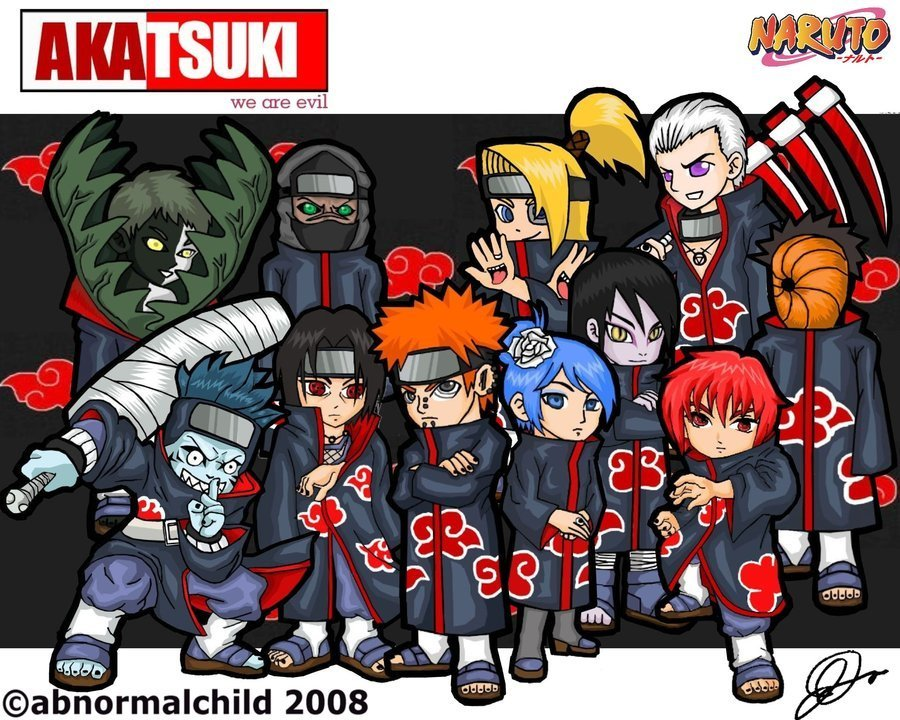

Akatsuki Masa Lalu
Profile Singkat Akatsuki
Kelompok ini didirikan tahun 1966 oleh 10 anak2 muda yang bosan setiap hari berjalan di jalan yang sama, melakukan kegiatan yang sama dan seolah olah mereka itu hanyalah robot yang sudah diatur. Mereka lalu mengubah jalan hidup mereka menjadi pemberontak,...Baca selengkapnya >>>>>

Baca selengkapnya >>>>>
Akatsuki Masa Kini
Profile Singkat Akatsuki
Seiring berkembangnya waktu, kenakalan kecil-kecilan diatas semakin menjadi kenakalan serius bahkan anggota Akatsuki semakin berkembang layaknya Amoeba yang terus membelah diri.Kegiatan-kegiatan mereka saat ini antara lain:...Baca selengkapnya >>>>>
Akatsuki Masa depan
Profile Singkat Akatsuki
Seorang pakar animatika (merangkap pornomatika) Roy Suryono telah melakukan sebuah penelitian secara diam-diam di markasnya tentang Akatsuki, bahwa kemungkinan 68% di masa depan Akatsuki akan melakukan hal-hal yang lebih mengesankan, antara lain:...Baca selengkapnya >>>>>